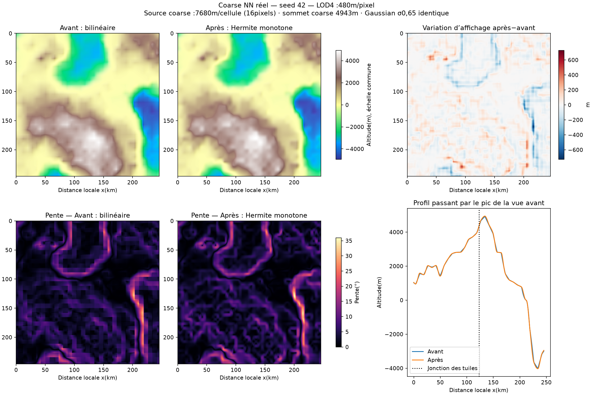
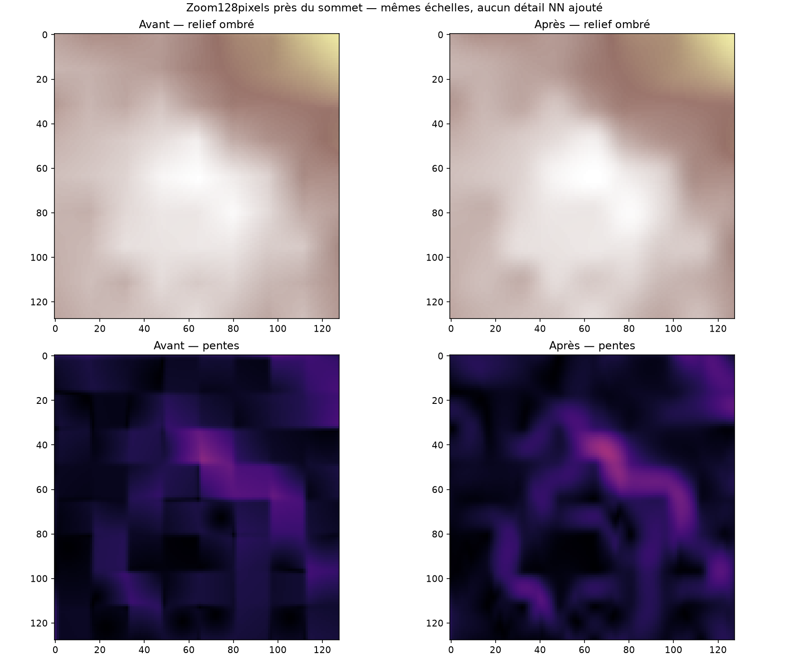
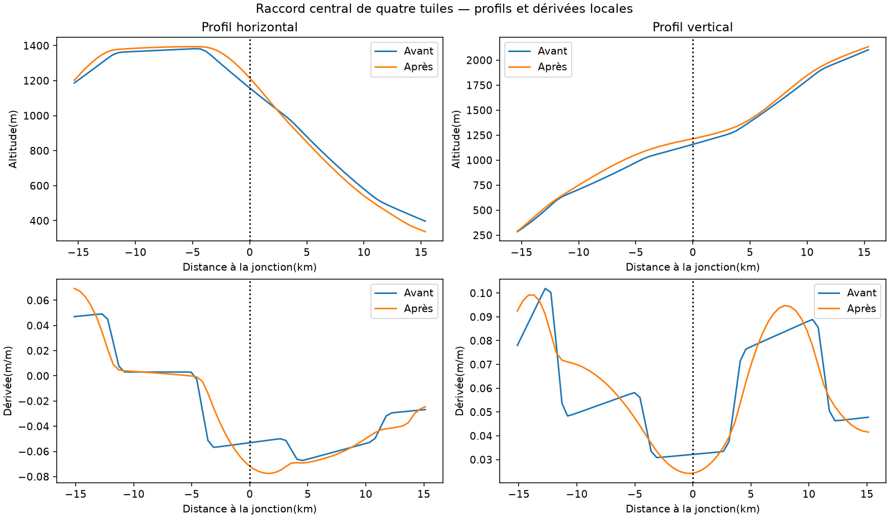

Seed42, profil natural. Pic coarse :4942.9m. Affichage480m/pixel ; source7680m/cellule, soit16pixels. Les deux versions lisent les mêmes halos et appliquent le même Gaussian σ0,65. Aucun appel NN supplémentaire pour la comparaison. Le lissage ne crée pas de détail appris ; des motifs de la grille source peuvent rester.
Variation d’affichage max728.937m ; RMSE67.320m. Raccord maximal sur les recouvrements testés :0m. Ce résultat porte sur quatre tuiles voisines de ce crop, pas tous les raccords du monde.


